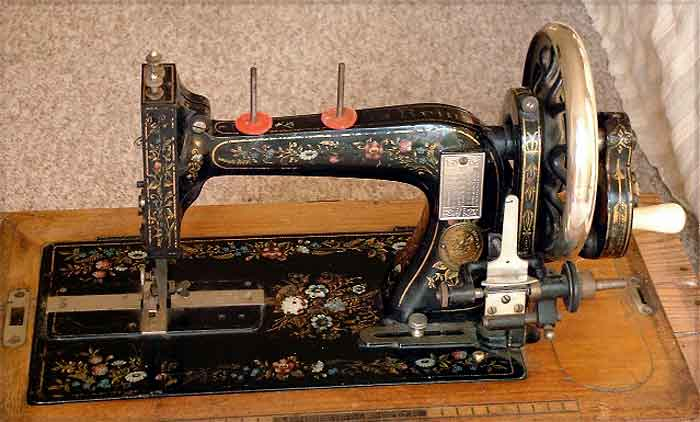
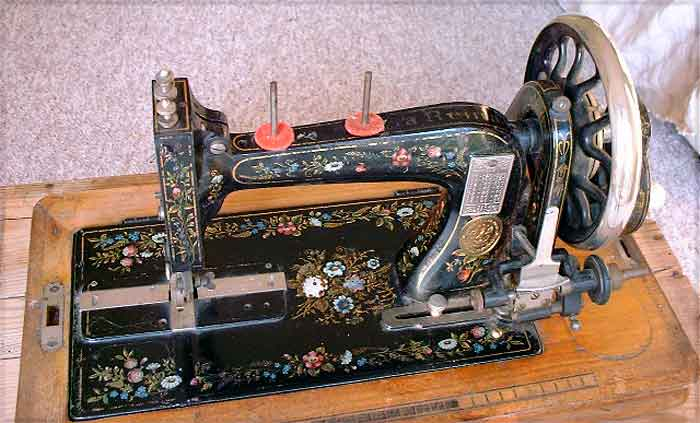

Clemens Müller, Dresden
La Reina, Serial # 2011622
Front View / Top View
Pictures courtesy of Claire Sherwell
Front View

Top View

©
Alan Quinn 2002 All Rights Reserved
Pictures posted on this page may not be reproduced or distributed in part or in whole without the prior written permission of the relevant copyright owner